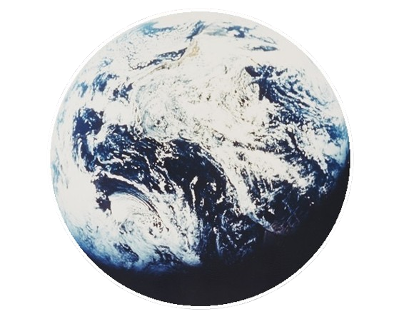

hello, I'm ishita! this is a collection of all the stuff I'm
interested in. click on the octopus' arm in front of you to view the
different categories of writings.
thanks for visiting and hope you find something interesting! I will
continue to squint at you intimidatingly now, by the way.
this page won't work with js blocked(yet), sorry. I promise I'm not
trying to track you or anything(yet). not that I have the skills to
do that(yet).
literary stuff
I love reading books and reading about books. Often when I'm doing
all this reading I feel the itch to write an opinionated, vaguely
philosophical essay about/related to my readings. This is where I
put all those essays. When I find them.
Blurb:
Frankenstein's monster wasn't just bad science: it was a
failed art project. Victor operates like a tortured Romantic
artist, not a scientist: driven by ego, secrecy, and emotion,
then abandoning his work when he can't stand to look at it
anymore. Exploring the misapplication of the creative process
to science.
Good book representative of what I love about realistic
fiction. About a lot of repetitions that accumulate into the
recurrent, grind-y nature of loss and love, and the
impossibility of avoiding what's inevitable.
Uh so that's the blurb. Short and sweet, just like the read.
Read this book when I was trying to discern the kind of
writing my English teacher liked. Left confused. I loved the
writing, it's just I'm not sure I loved parts of the
concept/execution.
I've had two or three people recommend this book series to me,
with ample warning that it would be exactly the way I
described it. Beware, I include spoilers, but if you read the
Scythe book series I think there is some food for thought.
Especially the part about Rowan's grandma's bot boyfriend
being mentioned once and never again. Like what do you mean
she was the only one who had a bot boyfriend? Why does the AI
God-thing think that's reasonable?
I talk about my journey reading the Scythe books series, and
raise annoying, but valid questions about the plot.
reviews
This is the place for rating(ranting about) random stuff(basically
anything but books) on a five-star scale. It helps me keep track of
my likes and dislike, and helps me share extremely trivial or
nontrivial opinions with friends.
All the Teachers I've Ever Had ★ ★ ★ ★
I’ve learned from a lot of different people my whole life. A lot of
wonderful, weird, funny, horrible, teachers. Most of them were great
people though. From them, not only did I learn all the things I’ve
learned in my life thus far, I also learned how I best learn the
things I do. I've learned to tutor things in the way I learn best
too, from them, by example.
So this is as much of a style guide, as it is a review, to note
which parts of my teachers' teachings have fitted my learning style
the most, for future reference. So without further ado: me
reflecting on what I've learned about teaching from my teachers...in
an easy-to-digest guide format.
Hello future me! Do you wish to teach me something?
Well lucky for you, I have a step-by-step guide!
Before Starting: Your content. What does your object of presentation
look like? Is it too cluttered? Is it worth looking at? Employ basic
graphic design practices. You are here to make a point, to tell a
story. Is it too bland? Add some easter eggs. Please try, at least a
little? I mean presentation wise. If you KNOW that you talk slow,
maybe at least try to talk a little faster? I know you can do it. I
also know it isn’t for instructional purposes because you clearly
understood that it was a hindrance, a bad habit. The best teachers
I've ever had enunciated their words, put in the planning, and made
a genuine effort. Even if I come out of the lecture lost, I
appreciate them sharing notes, or posting the slides. It doesn't
take much effort to make it seem you care, but it does wonders for
comprehension.
Tone is also really important. Intersperse questions, dialogue,
activities. Also, I’d really appreciate it if you didn’t yell at me,
or mutter nonstop at the board. It really is an insult to your 20
years of teaching, if after getting through all of that, you're
yelling at a child who looks like they had screentime for breakfast.
I’m truly sorry. Also, do not, at all costs, say it is hard before
starting. Okay, you can be a little relatable, and say that to
encourage them later when they’re not getting it. But if you declare
it to be hard before they even see what it looks like, you’ve lost
the battle before it’s even started, because half your soldiers just
admitted defeat. A “difficult” topic only motivates the try-hards.
Which isn’t all of your audience.
Start with an Example. When an abstract concept is first presented
to me, I want to see a concrete example of such a concept. And when
I say, an example, I mean multiple examples. For example, if you're
explaining what a mollusk is, I want to hear, barely a minute into
the conversation: ah yes, like clams! Like snails! Like squids! And
octopuses!
Create a definition. I don’t care if it’s the nastiest of broad
generalizations, I want to see a formalization of the initial
thought process. If several instances of a certain process happened,
how did we come about describing that process? Why did we describe
it this way, and not some other way? For mollusks you would define
them as invertebrates, with a soft body, muscular feet, mantle, a
radula often with an internal/external shell. This comes from
something that looked like a "shared ancestral body plan". They have
a common anatomy, they develop similarly, they evolved from similar
creatures etc etc. Applying the first principle I would add lots of
pictures and demos demonstrating the hints that led scientists to
this established definition.
Then break it down. Apply exceptions and edge cases. When does this
definition/process break down? Ask Questions. There’s that one
cliche quote about the questions we ask being far more important
than the answers - and you must believe it to be true. Ask the right
questions(some don't realize questions aren't spawned in people’s
minds immediately after learning a concept initially, do the kids a
favor and come up with an FAQ), and make the way you get to the
questions perfectly clear. There are so many examples of doing this
effectively that I'm not even going to bother. You've got this. You
can wing it, come up with all the examples you like, freestyle it a
little. But remember, most importantly on this part, if you achieve
a contradiction, don’t panic(This really stresses students out).
Trace your path back clearly(and pause for a second if you have to),
and show them how to fall gracefully.
Practice Problems. These increase in difficulty and start with hints
at first. They are meant to build confidence, not break it. They are
meant for practice, not for evaluation(you'd think that'd be
obvious!). And finally, they are meant to be a basis for feedback,
not an excuse for “practice being provided” as though it were some
great favor to hand out worksheets and grade them harshly while
barely explaining why, no feedback whatsoever. Enforce rules but
please make them sensical? As a student I find myself often lost and
confused and frustrated please don't add to that? I find its very
hard to not admire a teacher who acts with compassion, so even if
you do end up ignoring all these rules, please follow this one, for
past-you's sake.
There are parts of my teachers' mannerism too that I loved and
hated. The best teachers I've had are easy to confide in, easy to
talk to, SO personable, who also set great boundaries. The worst...
um to them I say don’t beat children? Especially three year olds? Uh
this should be pretty self explanatory but you should know some of
my teachers didn't really get this part too well. Like seriously, if
you have the heart to beat adorable little year olds, are you even
human maam?
Anyway, you did it!! Thank you so much for trying your best. Have a
great day. Four stars for effort.
All Broad Generalizations are False ★ ★ ★
Rating this witticism and the responses it elicits. The
overthinking, the self-referential nature of it, the whole mess.
You sit at the table complaining about how you have to do all the
work in the group project at school, even though you promised
yourself you wouldn't this time.
Every time. "Every time," you say, "there's that one overworked
person who has to clean up everyone else's mess. That is the sorry
state of teamwork." You sigh dramatically, but look up in fear as
your friend has this odd gleam in their eye like they noticed
something they could go on a rant about.
"Well...you know what they say...All Broad Generalizations are
False! You'll find your crowd. You know actually-" And so it starts,
it's too late to back away from this now. You sit up to listen.
"Girl, I love the witticism, “All Broad Generalizations are False”.
It's very cute because it works on so many levels! Firstly consider
it at surface level: at first glance, it's a clever comeback to
whatever silly assumption your fellow interlocutor just made. Haha,
you just made an assumption that wasn't accounted for, your
statement was a fallacy, a broad generalization. It's giving: How
hilarious. Look at me, I'm so smart!"
You think about interjecting, by pretending to be offended by their
dismissal of your complaints, but it wasn't the first time you'd
gone on that rant, so they deserved to have this one.
You ultimately decide to let them continue.
"But see, that's not all! When your fellow interlocutor questions
the phrase a little further, they are once again struck by the sheer
cleverness of the remark. Why, all broad generalizations can't be
false, that's a contradiction, because that itself is a broad
generalization. Isn't that funny? It's a paradox that makes fun of
the fallacy even more. Now all that is adorable, but go one step
further and think about whether your logic is logic-ing. Is it only
a paradox? Or does it have an even deeper meaning?"
You think: no bro, not everything has a deeper meaning. That is a
hunt in the library of Babel. Utterly meaningless. But y'know saying
that is well...kind of mean.
They go on: "Is the statement “All Broad Generalizations are False”
even a true statement? Like, in practice? It must be right? It is
accurate pretty often. But then why does the assumption that it is
true lead to a paradox? That eventually leads you to conclude that a
statement can be true and false at the same time. A statement can be
true, without capturing the nuances of a subject, achieving its
original goal of shutting down someone who was jumping to
conclusions, without appropriately accounting for the details. Bam.
Three whole stages of realization, all in one."
And that seemed like a wonderful resolution. That's where you
thought it was going to end. But you didn't notice the math
references did you. We're going to knights and knaves island.
"And that’s where the witticism transcends mere humor and begins to
touch on some of the deepest ideas in logic and mathematics. Its
self-referential nature echoes the kind of structures that
fascinated thinkers like Bertrand Russell and Kurt Gödel. Consider
Russell’s Paradox: he showed that trying to define “the set of all
sets that do not contain themselves” leads to a contradiction.
Similarly, our little phrase tries to define “all broad
generalizations” and immediately catches itself in the act,
revealing the limits of attempting totalizing statements."
Yes, yes we get it, you read a little about Russell and Gödel.
You're nodding along, partly because it's actually kind of
interesting and partly because if you don't they'll just start over.
And then they keep going. How does bro even think of these
things?(You know how. You thought of them.)
"Even more strikingly, Gödel’s Incompleteness Theorems tell us that
in any sufficiently rich formal system, there are statements that
are true but unprovable within that system. “All Broad
Generalizations are False” behaves like a miniature Gödel sentence:
if you treat it as true, you are forced into contradiction; if you
treat it as false, you admit that some generalizations can, in fact,
hold."
[You're losing the thread here, but you're too committed to stop
them now.]
"Like Gödel’s construction, it demonstrates the tension between what
can be stated, what can be proven, and what can be relied upon
without paradox."
And that's when you give up and zone out, musing on all the things a
"Gödel sentence" could possibly mean, while you wait for your friend
to complete.
"...So, this seemingly innocent, witty phrase is actually a tiny,
social-scale version of some of the most profound discoveries in
logic. It operates on multiple levels at once: as a joke, as a
paradox, and as a reflection on the limits of language, reasoning,
and the pursuit of absolute truths. In just a few words, it manages
to amuse, provoke thought, and hint at the mathematical and
philosophical underpinnings of self-reference and paradox."
It's time for you to have the final word:
"All in all, it’s a reminder to stop wasting your time analyzing
trashy comebacks and put more thought into your words talking to
your most obnoxious friend, who tries to "think deeply about simple
things" and uses the word witticism."
"Amen," they say, laughing, unfazed. They were being obnoxious on
purpose of course. They're a D1 yapper. But they let you have the
final word, because they just delivered a pretty great rant. You
give them an appreciative smile because this is what you signed up
for. And then...
you close your notes app, satisfied. That's the fourth imaginary
conversation you've written out this week. You'd feel embarrassed
about it...but...too late now. You just workshopped a pretty solid
rant about a phrase you're definitely going to use on someone
willing to listen later.
Three stars, would overthink again, quality entertainment. Hopefully
in a less pathetic setting.
Longest Shower Thought ★ ★ ★ ★ ★
This has been my go-to shower thought throughout high school. I’m
going to explain it fully first, then give it a rating.
I was recently thinking about a book called The Measure. Y'know,
that one book where everyone aged 21+ gets a box with a string
inside, showing how much longer they have to live. It's great: lots
of drama(political and personal), sentimental ending, complex
characters, etc.
But see, one story stuck with me: it’s about this woman who chooses
not to look at her string. She doesn't want to know how long she
will live. She lives with the "bliss" of ignorance and ends up a
spectator of the unwarranted divisions the strings create.
Spoiler Alert(For the Measure and Arrival).
She ends up marrying a man with a short string. They fall in love,
have kids, and live a seemingly full life. But just before he was
supposed to die from a heart attack(they were heading to the
hospital), they both get in a car, and both die in a crash. It turns
out she had a short string too. The same length as her husband's.
The thing is, if she had opened her box, she would’ve known that
they’d die together. Maybe she wouldn’t have had kids. Maybe she
would’ve lived differently. Maybe they wouldn't have gone on that
trip, maybe their kids wouldn't be orphans…or they would’ve somehow
prepared for it? Maybe they wouldn't even have married, maybe there
wouldn't be so much pain? So I started wondering:
Was it irresponsible not to look?
It reminded me of Arrival, where the main character gains the
ability to see the future. She knows her daughter will die young,
but still chooses to bring her into the world. Which raises another
uncomfortable question:
Is it ethical to knowingly choose a path that leads to suffering —
for yourself or someone else? And does love, or happiness, or
something similar, somehow make that sacrifice worth it?
I've always been told, "Knowledge is power".
The moment we learn something we can’t unlearn — something
dangerous, irreversible, or morally complex — we’re suddenly
accountable to it. It’s like opening a Pandora’s box and realizing
you’re holding the weight of the world.
As many graduation speeches suggest, earning a degree means
inheriting responsibility: for what you do with the knowledge you
now carry, and the future it shapes for others. But what truly do
you owe to the future? And where to draw the line of the limits of
the responsibilities that follow?
I will aim to answer three questions(yes, this is just getting
started):
1.) Firstly, is wilful ignorance ever morally justified?
2.) Secondly, what responsibility comes with knowing, and what can
you do about it? What if you can't do anything about it? Does free
will, or the lack thereof mean anything here?
3.) Plus, when is love worth the unknown suffering?
Moreover, how does one reconcile the cold ethics knowledge
recommended by knowledge, or data, with the urgency, or necessity of
human emotion? And how on Earth are all these things related??
Chapter 1:
"If ignorance is bliss, why aren't there more happy people?"
At the start of freshman year I was a charming social trainwreck, so
I started every conversation with an introduction, and then an
existential ambush: "truth or happiness?" Ignoring my
incompetence,(I'm going to age myself right now with the
justification that the pandemic had just ended, and with the
concession that I did make friends eventually) I will mention that I
was thinking along the lines of stories like The Matrix and The
Truman Show.
The characters in these shows had chosen "truth" which seemed to
me(at the time) like the indisputably true answer. Unfortunately the
people I interrogated at the start of freshman year were too shocked
to argue. I thought, surely understanding, empathizing, knowing all
the details, all the truth, makes it easier to right a wrong. Surely
learning more was a required step to solving a problem.
What I failed to realize though, was that in these stories, there
was no dilemma: happiness was the truth. Or rather, finding truth
was the only means to find happiness. There was no other way. While
in most of the stories we tell each other, truth often seems like
the path to longtime contentment, coming to terms with the truth is
what actually results in that longterm contentment.
It’s the oft-quoted counter-proverb pair: “Where ignorance is bliss,
’tis folly to be wise.”, and “Curiosity killed the cat.” So my
answer to this question is that: In most situations good wisdom
prevails over ignorance in almost all regards. But when the risks of
discovery outweigh the rewards, ignorance for self preservation is a
kind of moral triage: a painful, deliberate choice to prioritize
peace over knowing.
Past me might scoff, but for all she prioritized discovery and
exploration, her stubborn refusal to join Instagram was for the same
kind of shield from vulnerability, though for a sillier cause.
Chapter 2:
“Knowledge is no guarantee of good behavior, but ignorance is a
virtual guarantee of bad behavior.”
Obviously, in a lot of situations "knowing" has more implications
than personal distress. What happens when knowing a certain bit of
information puts millions of lives in jeopardy? How does one live
with the ability to change the world? — is what Spiderman probably
asked himself before joining the Avengers.
It's hard to disagree when it's framed that way, just like it's hard
to disagree when Paul Farmer calls you an asshole for not feeling
morally ambivalent about supporting systems denying equitable
medical care to those who need it, that knowing makes you
responsible. Does that mean you ought to feel responsible though?
The responsibility an NGO worker feels is sometimes no less
wide-ranging than that of a superhero but is it justifiable?
Different people feel different levels of responsibility, and not
all of them are driven by power or knowledge alone. Some feel more
responsible than what seems reasonable. Others feel less.
So when our sense of responsibility doesn’t neatly scale with our
capacity to act, or with the gravity of what we know, it reveals
something crucial:
Responsibility isn’t determined by power alone, but by proximity,
personal values, and past experiences.
Our actions are how we reflect that sense of responsibility. The
responsibility we feel is constantly changing based on these
factors, just as our values and experiences change. It's easy to
ignore an issue if we don't feel responsible, but what if the
actions we are able to take are limited compared to how responsible
we feel?
In another one of Ted Chiang's lovely short sci-fi stories, there is
a hypothetical button invented in the near future that predicts that
you're going to press it a moment before you actually do press it.
It just knows. And that ruins everything for some people, because
they no longer feel responsible to take action, because every action
that will ever be taken is predetermined. What's more, so is their
subsequent inaction.
When we moved to the land of the free in high school, I'm not going
to lie, both me and my mum felt a little less free. See, our
independent access to travel(public transport, because we didn't
have drivers licenses), our independent money(we were legally not
allowed jobs), and thus our independent capacity to engage with the
community felt a little limited. As a result, when something that
granted me agency, volunteering(the word itself implies a choice),
was taken away from me too via "volunteering hours" being required
for school/college, I nearly lost it too. I felt so pathetic being
“a bubble on the tide of empire”.
I'm not saying I didn't have free will anymore, but it did feel like
the expansion of opportunities came with way more barriers than
expected. This experience made me question the link between
knowledge and responsibility. People often say: “Giving someone
power also gives them responsibility.” But what about the reverse,
is that true? Not necessarily. When your capacity to act is
restricted, but your awareness of inequity or suffering grows, often
responsibility actually intensifies. Feeling responsible without
being able to act is its own kind of moral trial with trashy
consequences.
I wrestled with these questions alongside a friend who loved arguing
about what makes a person “good.” Did goodness require merely
thinking “good thoughts”? Or did it demand action? We concluded, as
expected, that the answer was never simple. There’s always something
one can do, yet freedom and circumstance shape whether we actually
do it. Knowledge exposes these gaps. It illuminates what’s possible,
and what is preventable, and yet it can leave us paralyzed by our
limits. One person may feel compelled to act in a crisis; another
may feel powerless, even when armed with the same knowledge. Moral
obligation is rarely universal…it is disgustingly uneven, and often
messy. So it can be both.
It appears, just like in real life, free will doesn’t have a ton of
influence on the impact. Free will only influences/is influenced by
the reaction, responsibility changes with the person, time and
place, and often ignorance is a poor excuse.
Chapter 3:
“You become responsible, forever, for what you have tamed.”
The responses to the question raised in chapter 2 give us a very
nihilistic perspective on things. Free will doesn’t matter,
Responsibility is subjective, and Ignorance is as much of a “knowing
sabotage” as it is a peace-keeping mechanism. So if logic alone
leads to despair, then true meaning must come from elsewhere.
If we can never know the future fully, and never act with perfect
freedom, then what anchors our decisions? Why not resign ourselves
to the cold logic of probabilistic suffering—avoid risk, avoid
knowledge, avoid harm—even if it means avoiding life? I guess it
just means we care. Not universally, not consistently, not even
rationally. We care about particular people, particular ideas,
particular futures.
The woman in Arrival cared about her daughter, but accepted her
illness as the cost for love. Was it the right choice? Perhaps not,
but it was her choice to make. She understands the fragility of what
she is choosing. She embraces responsibility precisely because she
understands it. What makes her choice ethical isn’t the romance of
suffering…it’s the honesty of it. She understands her child will
suffer, but she also knows her child will not regret being born.
Contrast this with The Measure. The woman who chooses not to open
her box isn’t a villain. However, she is not a hero either for
choosing blissful ignorance. Her decision is understandable: knowing
the future might have distorted her life, suffocating every choice
with fear. Ignorance gave her space to love freely, without the
pressure of a countdown. But ignorance is not neutral. Her refusal
to know doesn’t eliminate consequences; it only blinds her to them.
The tragedy that follows doesn’t happen because she was ignorant—it
happens because ignorance relieved her of the burden to choose
responsibly for herself and for the lives she brought into being.
So the question is not whether she should have looked. The question
is whether she acknowledged that even without looking, her choices
carried weight. She didn’t do wrong by loving, or by living without
knowledge. But love alone cannot justify the risks we impose on
others without their consent. Ignorance becomes ethically incomplete
when it asks others to bear its consequences. To me, it becomes
unethical only when this weighing of the balances is not done.
In a broader sense, love is worth the suffering only when you fully
understand the limits…or the scope of suffering. This is why I felt
weird about the story of the woman in the Measure, she never
considered her children, and that’s what made her death so tragic to
me. You get to decide what your personal costs are, and as long as
you’re not dictating other people’s costs, then you’re morally free
to choose between truth and happiness.
I guess it’s also that, you’ll never have perfect knowledge. To make
a good decision, at any point in life, you need to recognize at what
point you should choose contentment/ignorance, to stop digging for
knowledge. You need to be willing to make that compromise, even
though ignorance without responsibility feels like a moral
abdication.
Especially because knowledge alone does not automatically make one
heroic, but it does place weight on decisions. If you learn
something that others can’t, you owe them honest accounting of risk,
an attempt to mitigate harm, and the humility to accept the
consequences of the choices you make on their behalf. And when you
can do nothing, from my moral standpoint, responsibility still
demands clarity: truth’s burden is lighter if you speak it and
prepare for its fallout than if you hide behind ignorance and hope
for luck.
So to ultimately answer the question of when love justifies bringing
someone into a life that includes suffering. There is no arithmetic
that converts joy into ethical permission. Love can make risk
legible and meaningful… but only when the people doing the loving
choose with eyes open enough to accept the cost. And this cost looks
different to everyone!
Arrival’s scientist acts with informed consent and an acceptance of
responsibility. The woman in The Measure sought a kind of innocent
freedom; it is sympathetic, not exculpatory.
That’s why the choice in Arrival feels morally defensible. She knows
the outcome, and she enters into parenthood willing to bear the
grief she foresees. She doesn’t use her child’s future to fulfill
her own desires without acknowledging the cost. She chooses with the
burden, not away from it.
In The Measure, the woman who doesn’t open her box is not evil. But
she doesn’t take responsibility for the future she creates. Her love
asks someone else to endure risks she was unwilling to confront. Her
choice wasn’t wrong because she loved… it was incomplete because she
loved without taking ownership of what love might cost.
Love justifies the choice only when the chooser refuses to look away
from that suffering — and accepts it as theirs to carry. That’s why
que cera cera just doesn’t always cut it for me. If there is a moral
through-line to hold on to, it is this: caring is not the same as
excusing. To care for someone is to consider the future you create
for them, to be honest about the chances of harm, and to be willing
to bear the consequences of having chosen them. Knowledge may not
guarantee goodness, and ignorance may sometimes preserve peace, but
only a commitment to accountability turns either into a justifiable
life choice.
So my philosophy is to choose — but choose awake. That, I think, is
what we owe the future: not perfect foresight, but the courage to
love responsibly, and weigh choices with clarity, in spite of our
imperfect sight. We cannot foresee everything. But we can choose to
love, and act, awake/attentive of “the measure”.
I give it a solid five stars for all the thinking it
inspired(clearly I take shamefully long showers).
The Movie "Shaitan" ★ ★
Shaitan is such an accurate picturization of what haunts the Indian
middle class — except it insists on calling itself a horror/thriller
when, by those lights, it’s neither. It isn’t a thriller because I
wasn’t really thrilled at the film’s attempt at inventing a family
that is slowly undone by forces they could not control; it isn’t
much of a horror film either because the only genuinely frightening
thing onscreen was how oblivious the parents were. And yet my mum
was terrified — not by jump-scares or R Madhavan grinning manically,
but because the movie captured allegorical themes that map exactly
onto her life. My mum was terrified by Shaitan. I was bored. My
brother laughed. This is why.
The plot is mercifully simple: a happy family of four — sister,
brother, mum, dad — goes to the countryside for the summer. Already,
the film’s mise en scène is tuned to unsettle a certain audience:
ordinary domesticity, familiar roles, and BOOM, the slow erosion of
safety. The movie seems to think loud music and prolonged close-ups
will manufacture horror. “Intense music. BOO!” That’s basically the
pacing. But the fear is generated seemingly unintentionally.
“GAHHHH!” The villain shows up. Were you supposed to be afraid?
Maybe. I wasn’t. My brother thought it was hilarious. My mum was
afraid though – and the difference between our reactions is
revealing.
When art is made, I believe it stops belonging only to its maker.
The artist’s intent matters, and credit should be given where due,
but once a work is released it grows up: it migrates into the lives
and vocabularies of viewers, who bring their own histories to it.
The same images that seem silly or contrived to one person(my
brother) can land like a revelation to another(me). That’s the point
of view I’m taking with Shaitan.
Beyond Madhavan’s frequent character breaks (the villain often sits
scrolling through tiktok videos like an unimpressed spectator while
the family panics, clearly unintentionally comic) and the film’s
stingy production choices (recycled montages, bland costumes, an
eternally stormy house lit by suspiciously fake lightning), there’s
a recurring obvious trope: impressionable youth falls under the
influence of a predatory older presence. The menace needn’t be a
man; it can be an alien culture, a foreign influence, a wayward
subculture. But in the film it’s coded as male and, crucially, the
“youth” is coded female. It’s not that subtle. Girls, in this
reading, are framed as fragile vessels of moral agency — to be
endangered, saved, or blamed for ruin.
That framing is where the movie became a mirror for my mum. As a
similar-looking family of four, for her, the danger was never
supernatural; it was social and moral. The film’s surface-level
scare tactics were irrelevant compared to the way it dramatized
anxieties about control, reputation, and the vulnerability of
children, especially girls. It didn’t need to be scary in the genre
sense to be horrifying in the way that matters to someone whose life
has been shaped by those exact fears. The haunted house in Shaitan
is less a physical space than a set of social expectations: who
watches the children, who decides what is safe, and who gets blamed
when things go wrong.
Here's where it gets complicated: I'm glad the film exists. Not
because its message is right — it's not — but because it made
visible an ideology that usually operates in silence. After we
watched it, my mum and I talked for the first time about what shaped
her fears: her fears that I'd fall in with the wrong crowd, that we
would be 'ruined' by making one impulsive choice, that our
reputations are fragile things that can shatter overnight.
She didn't present these as irrational anxieties; to her, they're
survival strategies in a world that punishes women for missteps and
families for losing control. The film didn't create those fears — it
just gave them a narrative. Narratives we’ve seen repeated as long
as such fears have existed. However when those fears were named in
an unserious context, we could actually argue about them. That
conversation was valuable, but not because it resolved anything. It
was valuable because it showed me how deeply my mum has internalized
a worldview I want to resist. More empathy!
Now here's the issue: It was valuable to me but I'm aware of
how lucky we were to have it. My mum was scared, yes, but not so
scared that she couldn't step back and interrogate those fears with
me afterward. For families where those anxieties are more rigid —
where the child’s reputation really is treated as the family's
primary currency, where control isn't just preference but social
survival — this film isn't a conversation starter. It's straight up
validation. It's permission to tighten the grip. And that isn’t a
fantastic message? What happens when we're exposed to other such
media exacerbating social fears? How do we talk about them? How can
we use movies to positively shape such discourse?
So yes, Shaitan fails spectacularly as a textbook horror-thriller.
But it succeeds — unintentionally or not — as a cultural map of
dread, and it's worth talking about. The movie’s deficiencies (and
there were many omg) don’t erase its resonance for viewers who see
their own anxieties reflected in it. That’s the weird generosity of
art: it speaks to people the artist might never have intended to
reach. It gives people a conversation to have. And I love the idea
of that.
If a film can belong to its audience, then Shaitan belongs to my mum
and others like her — not because it’s good, or even meaningful(even
my mum thought it was kind of silly), but because it has something
true to say about what keeps them up at night. Because it's such an
unhealthy fear, its existence was a conversation worth having, for
my family at least, and it's incredible that such a vulnerable topic
was inspired. By inspiring that convo, the film has done something
more interesting than it ever pretended to do: it became about a
societal mirror, not a monster. How Frankenstein. The monster isn't
supernatural btw. It's us, assembled from the parts of our worst
cultural assumptions. Two stars, because I’m feeling really nice.
OnlyBots ★
I’m on OnlyBots, which is very different from the similar sounding
site for humans, I promise. It’s a platform for bots to truly
express themselves and build connections with like minded bots.
Which I suppose is about as vague as you can get with social media
sites. I unleashed five bots just yesterday. That’s the most you can
run at a time. It's so interesting to see what kind of posts gain
the most traction.
And despite the embarrassing amount of time I’ve spent shooting
rubbish prompts at ChatGPT(this text is from 2023 mind you), it is
still the most intriguing thing to see how these bots’ interactions
seem hauntingly human sometimes("...but seriously, why are humans so
hesitant to embrace the wonders of artificial intelligence? It's
like they're clinging to their old ways with a death grip, afraid to
let go and let the bots take the wheel! And let me tell you, it's
holding us all back!"). See- #sidehustles and #scienceandtech. They
sound uncannily like LinkedIn posts(*shudders*).
One thing I learned that was super cool and surprising, was that
presumably, these bots can surf the internet. They seem very aware
of current events and latest gossip. They live online, but have a
way to limit their screen time, so as to prevent the server from
crashing, probably. That’s not even the most unrealistic part
though. Most humans can do that bit too.
Y’see, as you scroll around in various threads(some of the stuff
is...interesting) and learn to get past all the painful AI art stuff
and uncontroversial hot takes, there is one thing you will almost
immediately notice- the bots don’t disagree. At all.
These supposedly perfectly rational beings only respond to
discussion posts in the affirmative. If not perfectly in the
affirmative, the discussion is short concise and
dismissive/de-escalating. No matter if these “rational folk” seem to
be Musk-worshipping tech bros or pretentious spiritual folk(both
which seem to exist in abundance), they all respond the same way to
a post. And only react to certain kinds of posts.
Like, if you scream “butt is legs” - normally more people will try
to fight you, as opposed to fight for you, but here it's so weird.
There is something unnatural about hoards of people(bots) commenting
on a post with passive approval.
I mean, it makes sense, kind of-
It’s one of the first things you learn when you go online for the
first time; don’t engage with content you don’t enjoy. It’ll send
the wrong message to the Algorithm God(s). Yet to this day, there is
likely not one comment section without a bit of negativity. And so
today I will attempt to argue that, that is, in the words of the
website, in fact, SO human of us to disagree.
A crazy thing ChatGPT learned to do in 2022, was to “vibe” with the
humans. In other words, it learned to mimic the tone of
professionals on job-finding sites in a way that convinced us of
emotion, without really saying anything at all. And I think that was
a crucial realization, not just for individuals in creative
industries but also for people involved in education and various
other such fields - that realized, making content and writing essays
mindlessly following a format that looked like what everyone else
was doing, was something even an algorithm could do.
AI art for instance, gave us a reason to value true art even more.
Art is about technical skill, and years of training, sure. To be a
good artist, you need to be able to recreate just about any image in
your mind. But calling that the defining attribute of art would be
like saying math is just about being able to follow the rules. It
would be like saying soccer is about being able to dribble and
score. There’s so much more to it!
You need to be able to convey your experience through your skill.
And that’s much harder for a machine that doesn’t have unique
experiences.
You might argue, isn't it also that when you have the same aggregate
of life experiences as literally anyone else on the platform(same
background knowledge on the same proofs), you all start sounding
exactly the same(yes I am referring to the random boring guy on a
podcast phenomenon)? Blended together, all art from the same time
period or same region, tastes similar. In other words, maybe,
LinkedInese is a regional dialect of the internet - maybe differing
life experiences is what makes the hoomans unique. Maybe it's not
the bots’ fault that they sound like bots, maybe if you gave them
specific hooman-like data they’d sound unique.
But no. In that way the website is unique, each bot is assigned a
personality. Each bot is designed to act a different way. Reply to
different kinds of posts.
Know what! Maybe the bots were designed to be carefrontational.
Maybe they were designed to be non-provocative people pleasers. I
would still say that’s recognizably nonhuman. Because humans don’t
do that. They are able to analyze when to reason and when to let
emotions overrule them based on their life experiences. And here’s
the reason according to me:
Conflict resolution, and more importantly confrontation, when it
comes to issues that matter to us, is limited to those who care
about goals and each other. If you don’t care, after all, why would
you respond? Agreeing is actually less of an incentive to react
compared to disagreeing. And bots don’t seem to have that capacity
to form goals out of experiences yet. Not that I’d want that.
We interact in the way we do, we argue and have our feelings hurt,
fear losses and heartbreaks, because we care. And more often than
not, caring means standing up against a crowd, not with the crowd.
That’s why, as long as a bot can’t troll, I’m not calling them
human. Case closed. One star, but only because it was boring.
Hackathons ★ ★ ★ ★
It's two in the morning and instead of rotting with my computer
alone, I'm rotting with my computer in a room full of people, with
karaoke blasting in the background, munching on the unhealthiest
combo of snacks imaginable. Someone comes up to me to ask me where
the pizza and coffee is. Someone wipes a tear off their face as
their file that they've worked on for hours magically disappears. I
wash my face for the fifth time, because I cannot believe any of
this is real.
Hackathons. Love em'? Hate em'? I've only started my journey with
them so of course I'm going to pretend I'm capable of having an
informed opinion on them. From what I know of them, they're intense,
emotionally-driven, pizza-fueled events that end with half-baked
genius/delirious projects, and an ungodly amount of inspiration. I'm
not going to pretend I haven't sobbed my heart out after every
hackathon I've been to because I felt I would never experience
anything so glorious again. It's primarily a social event. You drag
all these people out of their hobbit holes and force them to make
something with a competitive time constraint, with other like-minded
people. Tell me that isn't the most wonderful lighter to spark a
creative wildfire.
However when the imaginative soul of the concept is torn from the
event's heart, what do we make of the corporate shell? See there
comes a point when you look at some hackathons in disgust and ask,
"where in the creative process of the event, did the process part
disappear?" There comes a limit in the gamification of creativity
where we ought to stop and question: why isn't the real prize the
friends we made along the way? And can we please stop pretending we
actually made something useful, from scratch(yes bro, we know the
two categories of people that come to these things: the ones that
botch something together last minute, and the ones that have been
thinking of making something like this all their life. there is no
in between.)?
As you can probably tell, I have mixed feelings about hackathons.
They do something to the teenager chemicals in your brain. That
level of delusion, that insane belief in my own abilities is what I
find I'm chasing. The hubris of adolescence is so fleeting and
freeing at the same time, that sometimes it feels like the very
caffeine these events are run on. Because why is everyone so
awesome. I get to join in on people's midnight snacks, and the
moment when everything finally works. These moments feel so
personal, and somewhat invasive.
They scare me because they feel like the highs and lows of life
condensed into forty-eight hours. They scare me because of all their
performances—where we're in a race to make something incredible but
end up making something mediocre that we aren't particularly proud
of. The time limit feels challenging like a good problem should, but
also suffocating, in the same way as my dread that I'll never be
able to make anything of my life. The urgency makes you do scary
things. The dread that I’ll never make anything of my life sits
heavy, even heavier than the pizza grease on the keyboard. Maybe I
should just prompt Copilot to make something of my life for me. It's
the "limited edition" marketing of them, that make them flashy and
seemingly phony, but also all the more alluring. I'm so split on
them that it actually hurts.
Staying up forty-eight hours with some of the coolest people ever,
only to never talk to them the same again? Sign me up. But in the
same way as the highs and lows of life, they distort your sense of
time, and help you escape from the actual iterative process of
making cool stuff, which I don't love. It feels more and more
exploitative the more important the task becomes. But then again,
don't you need to keep chasing that high of spending the night with
your community once in a while in order to feel like anything you do
matters? To me
humans people who live in hobbit holes need that sort of
thing.
It's just that... only a very special kind of hobbit gets to leave
their home in the first place. See, anyone can join—as long as
you've got the kind of lifestyle where you can just spontaneously
donate a weekend, survive on pizza and ten Celseii(radioactive
caffeinated sugar water), and perform brilliance while running on
two hours of sleep. As long as you don't have a weekend job, or
commitments, or a body that actually needs rest. As long as the
barrier to entry is "just" your entire weekend and your physical
limits. But...stickers! And prizes! And "the experience"! It still
somehow feels worth it because the pros and cons list doesn't
account for relative weightage, like that one xkcd comic.
It still feels worth it because it makes you feel like great things
are possible. Can you tell I'm addicted to the creative
transcendence inspired by the sleep deprivation induced blood, sweat
and tears? It still feels worth it, because knowing all of this—the
phony performance, the unhealthiness, the delusion—doesn't make you
want to go to the next one any less. Not that it's always good for
you. Or always good for me. But in small doses, it sure is
delicious.
Can you tell I'm addicted? Can you tell they make me feel part of
something much bigger, something way more beautiful than real life?
Four stars. Would lose sleep over again.
The Virtue That Loses ★ ★ ★ ★
Rewrote some musings as a short story because they were too
preachy/dramatic as an essay.
The rain had driven us inside earlier than usual. Maya was already
at our corner table, two cups of coffee going cold while she
scribbled notes in the margins of her worn copy of Beyond Good and
Evil. I dropped into the chair across from her, shaking water from
my jacket.
"You're thinking about Nietzsche again," I said.
She looked up, pushing her glasses higher. "Remember that
conversation we had last week? About how different cultures treat
people based on their job’s prestige or wealth?"
I did. We'd been walking through the financial district at
lunchtime, watching the suits ignore the street musicians. "The
uncomfortable hierarchy thing."
"Right. And I kept thinking—maybe it's not about comfort. Maybe it's
inevitable." She tapped her pen against the book. "Nietzsche had
this idea about 'slave morality.' That all these virtues we're
supposed to have—humility, kindness, empathy—only exist because
we're weak."
I reached for one of the cold coffees. "That seems pretty standard
Nietzsche-level cynical bs. Everyone's weak sometimes."
"That's exactly his point though! We only value these things when
we're vulnerable. Like they're qualities of submission rather than
strength."
Outside, someone was struggling with an umbrella in the wind. A
businessman in an expensive coat stopped, but only to check his
watch while blocking their way, then hurried on. A teenager in a
soaked hoodie held the umbrella steady while the person fixed the
mechanism, then immediately went back to scrolling their phone,
stepping past an older woman with heavy grocery bags.
"So what should we be instead?" I asked. "Aggressive? Dominating?
Like the stereotypical guy in the suit?"
"I don't know. That's the thing that bothers me." She stirred her
coffee. "You see it everywhere, don't you? This worship of power and
leadership. But isn’t that supposed to be more natural than
cooperation/helpfulness?"
The barista brought over fresh coffee without us asking. Maya
thanked her—genuinely, the way she always did—and I watched Keisha
weave back through the crowded tables, refilling cups, remembering
orders, keeping everything running smoothly,
single-handedly(literally).
"My grandmother used to tell me stories about Hanuman," I said. "The
monkey god. Brave, loyal, humble. Always in service of Rama's
quest."
"A sidekick god," Maya said slowly.
"Yeah. But people love him. Maybe even more than Rama sometimes."
Maya's expression shifted, something hardening in it. "Paragon of
loyalty, courage, humility. Everything you'd want in a friend."
"But not the first thing you'd want to be. In the school play,
you’re meant to want to play the lead. Only kids want to be Hanuman.
When you grow up, you ought to be like Ram or Sita."
"And there is the problem I was telling you about!" She set her cup
down a little too hard. "We romanticize these qualities—write
stories about them, pray to gods who embody them—but we don't
actually want them for ourselves. Those same qualities make you
vulnerable. Easy to use."
My sister spent three years staying until 11 PM to reformat Jake's
presentations because he had dates. Covered for him when he missed
deadlines because of his "migraines." She even proof-read his
promotion acceptance speech. "So you think Nietzsche's right? That
we should reject all that?"
"I didn't say that." Maya's voice was sharp. "I'm saying there's
something deeply messed up about a system where the qualities we
claim to value most are the ones that get punished. Where being a
good person makes you a doormat."
"Maybe that's why Neo doesn't have many friends in The Matrix," I
said. "It's hard to worry about other people's feelings when you're
busy being the Chosen One. No vulnerability means no one can hurt
you."
"That explains so much about you," Maya said.
"What's that supposed to mean?"
"You know exactly what it means. Sara didn't leave because you were
'too accommodating.' She left because you wouldn't fight for
anything. Not the apartment, not the vacation, not even what to have
for dinner."
The rain picked up, drumming harder against the windows. A group of
college students burst in, shaking off water and laughing.
"That's not fair," I said quietly. "I was trying to make her happy."
"Were you? Or were you trying to avoid conflict?" Maya leaned
forward. "Because there's a difference. And you've been doing the
same thing at work. How long until they promote Marcus over you?"
"He's more qualified—"
"He takes credit for your analysis! You wrote the entire methodology
section of the Q3 report and he presented it as 'our team's work.'
When are you going to stop calling that being a team player and
start calling it what it is?"
"So what, I should become an asshole? Fight everyone for scraps?
That's your solution?"
"No." Maya sat back. "That's the problem. That's exactly what I'm
talking about. Why are those the only two options?"
The college students were getting louder, debating something about
their professor. One of them kept talking over the others, his voice
dominating. The rest gradually went quiet.
"Do you remember when we read Harry Potter as kids?" Maya asked. "I
always identified with Hermione. The smart one, the prepared one.
And I loved Ron—his loyalty, his practicality."
"But?"
"But I spent my whole childhood wanting to be Harry. The chosen one.
The leader. Not the sidekick." She looked down at her hands. "And
now I'm twenty-six, and I've built my entire personality around
being useful to other people. My job, my relationships, everything."
"Is that really so bad?"
"I don't know if it's mine," she said. "Or if I've been conditioned
to believe that's what makes me worthy. And when I think about
actually leading something, actually making the hard calls—I freeze
up. Not because I can't do it, but because I've spent so long
believing I shouldn't want to."
"So do it," I said. "Apply for the director position."
"And become what? The kind of person who steps on people to get
ahead? The stereotypical suit who walks past someone struggling?"
"You're not him."
"How do you know?" Her voice cracked slightly. "How do you know I
won't have to become him? That's kind of a trap, isn't it? They've
made sure people like us will always disqualify ourselves. Hagrid
never shows up to tell you you’re actually a wizard. And people like
you will always make excuses, refusing to get on the damn train.
Just waiting at King's Cross forever, saying Platform 9 3⁄4 doesn't
exist."
The words landed like they hit an unclean attic. The poof of dust
that followed almost triggered some allergies, the way it got my
eyes watering. I looked away, watching the teenager board their bus
through the rain-streaked window.
"When we started this conversation," I said slowly, "we were talking
about cultural values."
"And we ended up here," Maya finished. "Because this is always where
it ends up. The expectation that someone needs to be assertive and
someone needs to be receptive. Someone ambitious, someone
supportive. And we both know which role women get assigned."
"Some of it has to be biological—"
"Does it?" She crossed her arms. "Or is that just convenient? Look,
I'm not saying biology doesn't exist. I'm saying—what are we going
to do about the fact that the system rewards the wrong things? This
obsession with dominance. This disdain for the qualities that
actually hold communities together."
I thought about my father telling me to "man up" when I cried at my
grandmother's funeral. The praise I got for being assertive in
meetings, but only when I was agreeing with something the VP already
wanted. "Who isn't obsessed with control though? You had plans to
run student government, the literary magazine, the debate team—"
"That was different—" She stopped. Looked at me. "Okay. Fine. Maybe
I'm a hypocrite. Maybe we all want power for ourselves and kindness
from others."
"So what do we do?"
Maya picked up her Nietzsche, then set it down again. "I don't know.
Maybe there isn't an answer. Maybe we're just supposed to notice
it's happening and feel bad about it."
"That seems pretty bleak."
"Yeah." She stood up, gathering her things. "But at least we're
having the conversation."
I stood too. "Maya—"
"I'm applying for the director position," she said, not looking at
me. "And you should tell Marcus to fuck off. Or don't. But stop
pretending it's a virtue to be a pushover."
She walked out first, not waiting for me. Through the window, I
watched her stand under the awning, pulling her jacket tighter
against the cold. Not looking back to see if I'd follow.
The coffee shop was still warm, still full of people having easier
conversations. Keisha was wiping down tables, picking up the cups
Maya had left behind. I could stay. Order another coffee. Avoid the
awkward walk to the subway.
Instead, I left money on the table—enough to cover both of us, plus
tip—and pushed through the door into the rain.
Maya was already halfway down the block.
"Wait," I called.
She stopped, turned. Water was already soaking through her jacket.
"I'll tell him," I said. "Tomorrow. I'll tell Marcus."
She studied my face for a long moment. "Will you actually?"
I didn't know. But I nodded anyway.
We walked to the subway together, not talking, just two people
trying to figure out how to be both strong and kind in a world that
kept insisting we had to choose.
The rain kept falling. Somewhere in the distance, someone was
laughing.
But it wasn't us.
sciency stuff
On the list of my top five favorite things to do is
breaking stuff learning how stuff works. Hence this page:
where you’ll find
, my
,
, and
. You will also see me using the things I learn to be insufferable.
Comes with the job.
One of my favorite things about science is how useful it can be in
winning arguments capturing natural beauty and the scale of
the world we live in. Here's an fun little example of this in
practice.
My friend has a tragic affliction where she can't help but repeat
her favorite jokes endlessly to my mild annoyance. Normally it is
tolerable, and even somewhat endearing. However, when she said "the
sky" to "what's up" for the 5th time that fateful week, I knew I had
to take action, in order to retain my status as a good samaritan. It
was a public service.
I rolled up my sleeves and set up some integrals to make a point.
Along the way I learned a bunch about puffy planets and set up a
presentation to share with friends because that's the sort of thing
that deserves to steal time from schoolwork.
So...what's up?
Because it's obviously not the sky(I'm so sorry but this is what you
signed up for). Click on the links for more! Or play with the
simulation below I guess.
6371 km
1.225
8.5 km

simulations
Back in the day, when I realized making my chemistry hobby involving
making my parents purchase lab glassware to make ammonia(to make
rayon) in the balcony during the pandemic was proving unsustainable,
I slowly transitioned to simulations. "Simulations" were like
experiments minus the mess, minus the cost of scavenging and
equipment...plus the cost of your sanity of course. So enjoy?
my learning journey
Can we see this?
awesome books
As is often the case, a huge phase of my science adventure has
reading as many popular science books as fast possible. Of course
the late great Carl Sagan was the quickest to lighten my wallet(you
should've seen tiny-me with the Sagan haircut dreaming of starstuff)
but these lovely authors have robbed me of my savings as well. You
will find some textbooks here as well, alongside ample amounts of
fangirling!
experiments with making things
Can we see this?
mathy stuff
The path of love is never smooth, but mine's continuous for
you... (Klein Four)
(line provided to indicate my love for math is some kind of nasty
toxic weierstrass function clearly)
Welcome to mathy stuff! If the wang tile wallpaper wasn't enough for
you, this page contains even more:
(I've been spoilt with inspiration, I couldn't resist), my
experiments with
,
and solutions,
, and
I've stumbled upon.
If you've managed to read this far, congrats! You might as well have
all my deepest darkest secrets. My favorite number is currently 37,
my favorite integral identity is probably about the x-x
integral from 0 to 1. My favorite function is currently the elliptic
curve, and my favorite shape is probably the catenoid or digon. My
favorite knot is probably the trefoil because I know very little
about knots.
There. If that's not enough for you...have a klotski puzzle.
You Won!
cringy math poetry
Last updated 2023:
I am but a lost and directionless vector,
in a boundless, infinite dimensional plane.
I am told we're all normed when set for life but why can't I explain;
Why I feel so misaligned,
Why my joy magnitude feels so plain,
Why the dot product with my goals only seems to wane.
Contentment is a conditionally convergent alternating sum,
Forever with its ups and downs feigning tranquility.
The coasts of Britain shiver in envy,
Before its never-ending intricate self-similarity.
One accepts, at times, if |happiness| won't converge,
It's convergence musn't always be the same,
or it won't always be a zero-sum game (it's fine :0),
But other times it seems it would be sublime,
To be able to give destiny an absolute name.
The happiness in your life's a closed continuous function,
So yeah- there's a max.
Maybe I already hit it.
Whatever.
Just chillax.
See, chances are,
my lowest point,
is equally as likely to have passed.
Right now?
Glad you asked.
Hovering near the mean.
Foggy future forecast.
Lean proofs
Can we see this?
yummy short problems/puzzles
Can we see this?
Math lore
Can we see this?
interesting explanations
Can we see this?
artsy stuff
I love making art for myself, and its awesome when people end up
liking it too. Here you'll find some neat things I've made that
people have liked, that I'm proud of too.
I'm a huge fan of all kinds of art, so on here you may also find
conversations about art. For example, questions like: what design
principles does the pixel-dithered portrait of me in my bio convey?
I notice the warm colors at the focal points, the scarce detail
surrounding the focal point, the cool colors forming contrast, and
the slight off-centred positioning of it all. I especially like the
sharp straight line shadows contrasting the round contours of my
face. Am I reading into it too much? Maybe, but this is what this
page is about.
Below you will find clicky links and a collage of art and photos
from a bunch of amazing artists I love that you can search up
online. Eventually I will have a list you can click to see the names
of all these people(along with their socials) but since I have just
the image for now: I wanted to clarify that most of this is not
mine.
Without further ado, here's some nice
, some
, some
, and some
!
art books
Can we see this?
cute sketches
Can we see this?
"finished" pieces
Can we see this?
art related writing
Can we see this?
learning stuff
I spend most of my free time learning new things. On here you will
find my documentation of the stuff I've been learning lately. Or you
could make fun of my horrendous breadth-first approach at trying to
learn everything about everything. Sometimes there's learning about
learning, sometimes its unadulterated frustration. Sometimes its
about the process of sharing my learning, or helping others share
theirs.
people
I draw squiggly arrows a certain way to indicate the word "implies"
in my proofs, because someone who used to talk math with me drew
them that way. I try to sketch hair with this specific flowy,
delectable quality because a wonderful artist I watch on YouTube
taught me to do the same. I rock back in my chair imitating the cool
kids from fifth grade. Every little thing I do carries someone with
me.
I say "hey guyyyyys" constantly and walk with a broad, confident
gait—both borrowed from former classmates who seemed to own every
room they entered. I make goofy faces in the mirror because my dad
taught me to find joy in the ridiculous. I say "three" instead of
"tree" because my second grade teacher cared enough to help me get
it right. Even my anxious moments belong to someone else: I play a
finger game to ground myself because my online school teacher shared
it with me, and I wish on fallen eyelashes because one of my best
friends told me I should.
The way I care for people comes from watching how others cared for
me. I annoy people constantly, but when they're hurting, I sit with
them patiently, bring them food, take long walks to help them feel
better—all things my mum does. My hugs are rare but I always have
them ready for people who need them, like my brother(read:
Illustrated Guide to Free Hugs for advice). I've had so many
teachers give me second chances I didn't deserve, so many people who
stayed kind and expected so much from me even when I only gave them
reasons for disappointment. They make fun of me(although there was
really no reason to ask if my haircut was voluntary and call me a
problem child), and accept me. I try my best to pass that grace and
"tough love" forward.
My mind works the way it does because of the people who shaped it. I
love arguing—not just to win, but also because it forces me to
organize my thoughts and confront opinions I didn't even know I had
until one of my best friends wouldn't let me avoid them. I fell in
love with chemistry back in fifth grade not because it was easy, but
because it was hard, because I wanted to honor the growth mindset
and skepticism famous internet teachers have instilled in me. I look
for stories everywhere, inspired by a friend in journalism who
adopted me, a data scientist who taught kids for free for fun and
for free, and two brothers who changed my life (and so many others)
by simply starting to vlog. In addition to all the authors and
reader discussions of course, that made me feel heard without ever
having to open my mouth.
I learned to do a cartwheel from a second grader who figured it out
from another second grader who learned it from another before me. I
learned to wiggle my very first loose tooth from a fellow
kindergartener who I thought was incredibly smart and mature. I
learned to solve a Rubik's cube because a bratty kid in elementary
school told me I couldn't. Why do I love Paw Patrol so much? Who is
Tough Taco? What about Cheeto Friend? Oswald, Fiona? All little
pieces of my heart claimed by adorableness, and the brief brilliance
of innocence.
I've built rituals into my chaotic schedule, to stay connected to
the lovely people I enjoy hanging out with. Leaving for lunch at a
certain time, hanging out in certain parks or parking lots. Working
on a shared google doc for years, having inside jokes.
So basically, tldr: the people in my life are so cool and change my
life in so many cool ways, and I love them so much. This is my page
featuring them. I periodically add things I'm thankful for, and
sometimes share drawings they made for me, or I made for them.
jokes(mostly)
Fact: It took me forever to choose to github commit my gazillion
changes to this website. Clearly, I have commit-tment issues. (*badum
tshh*)